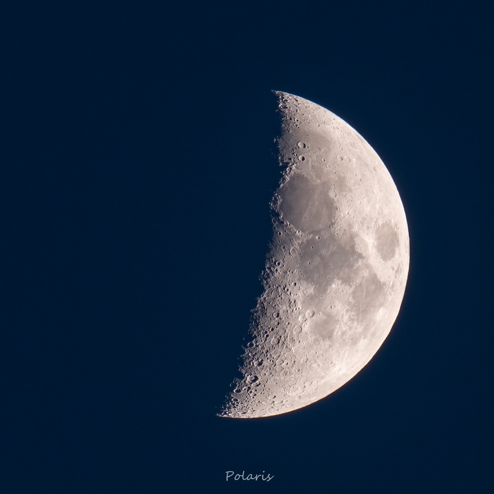
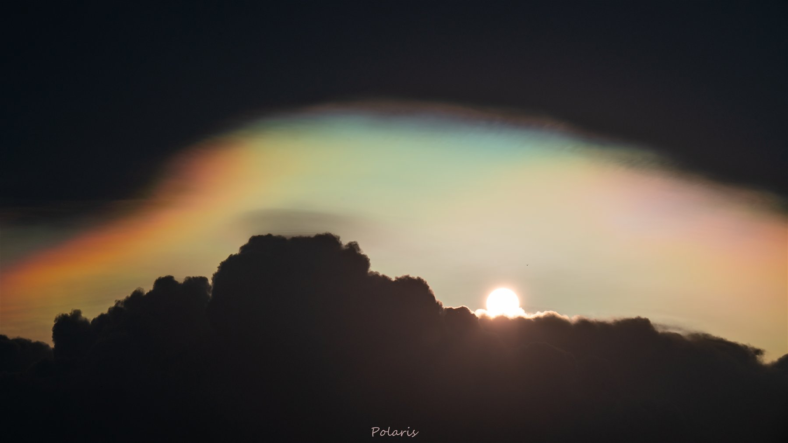
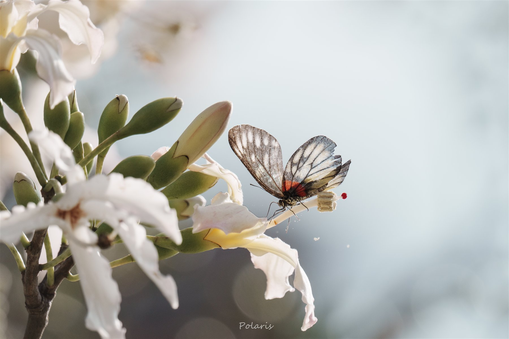
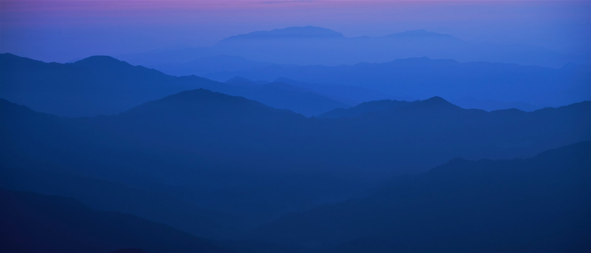
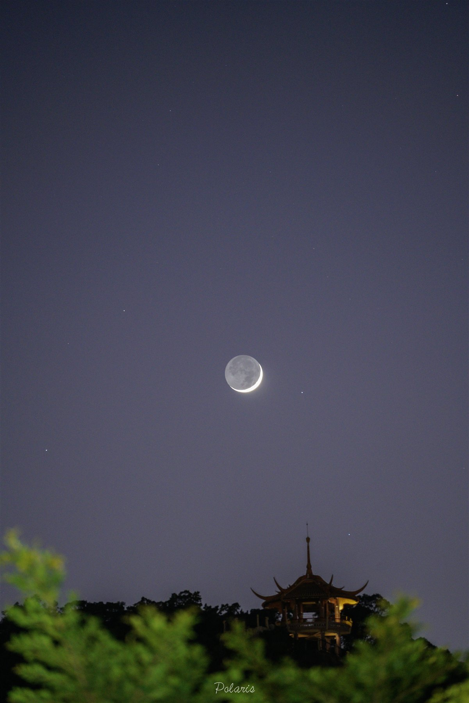
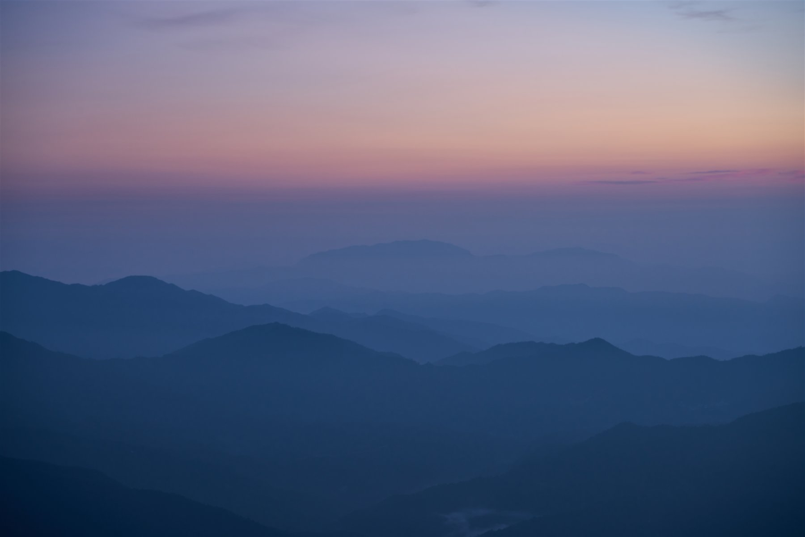
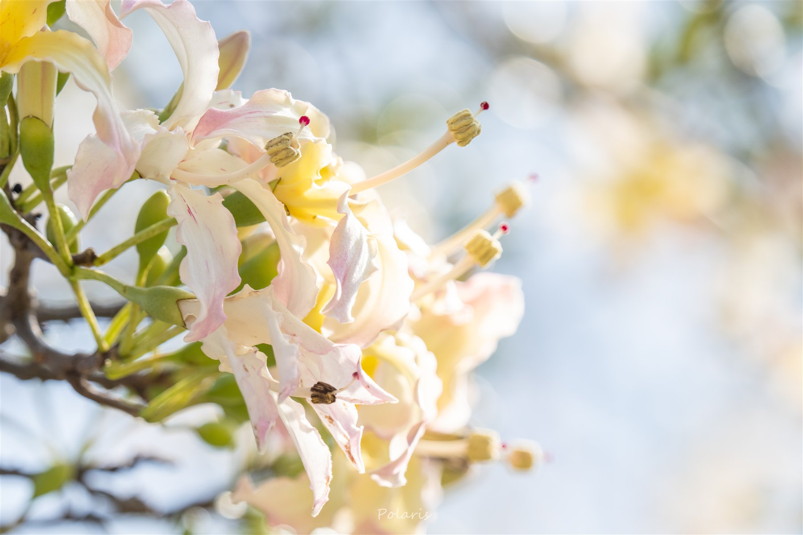

本次开篇 · 天象
月面细节适合做开篇，不靠热闹，靠呼吸感。
这张方形月面图留白很干净，适合作为首页第一眼的主视觉，让标题和图像互不抢戏。
我读了你放进来的试验图之后，首页方向已经比之前清楚很多：它不是单纯的“大风景站”，而是更像一份自然观察档案。 月相、山线、水面反光、云后天光、花和昆虫同时成立，所以首页最适合做成“先给气氛，再给浏览，再给系列”的结构。




左边是分类入口，中间是试验图目录，右边是当前作品的放大阅读。这样你以后补图时，不需要先决定“整站长什么样”，只要继续往这几条线里加图，站点就会自然长出来。
这不是“为了分栏目而分栏目”，而是因为你的照片已经自然分出了三种观看距离：抬头看天、平视看山与水、靠近看花与小生命。站点如果顺着这个节奏生长，会比单纯按时间排序更像你自己的作品世界。

月相、云后天光、偶然出现的彩色光晕，适合承担整个站点最静也最抓人的那一部分。这里不需要很多字，只需要干净的节奏和足够大的图。

这条线最适合承担“站点气质”。它不需要每一张都很戏剧化，但要稳定、耐看，适合作为横幅和系列目录的底盘。

它们会把整站从“漂亮风景”拉回“个人观察”。这部分不需要很多数量，只要偶尔出现，就能让访客感到你是在持续靠近这个世界，而不只是远远看它。
这一轮排版的目标不是一次把网站做满，而是先用真实图片把节奏定准。等你确认这条方向是对的，再继续补个人名字、正式站名、单独系列页和作品详情页，会轻松很多。
先给人一个明显但不吵闹的主图。你这批照片里，月面、月下亭子、蓝色山线都能承担这个位置；这次我先用月面开篇，因为它留白最干净。
不建议把所有图直接做成长滚动瀑布流。你更适合保留一个可筛选的档案目录，让照片能按“天象 / 山线 / 水边 / 微观”逐步累积。
1 张你最想当门面的图，3 个你认同的系列名，和 6 到 12 张你确定要留下来的代表作。到那一步，就可以继续做正式站点和命名了。